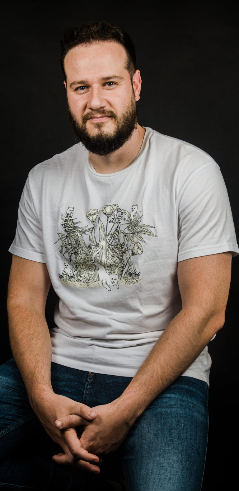

Diego Bolson Ruzzarin
Es un diseñador industrial y youtuber brasileño especializado en el diseño de alimentos. Es CEO y fundador de Foodlosofia y Casanomo.
Estudió en el Instituto Tecnológico de Monterrey y posteriormente obtuvo una maestría en el Politecnico di Torino, en Turín. Trabajó en PepsiCo México durante cuatro años como coordinador de investigación y desarrollo.
En el 2011, se unió a Enivrance y cuatro años más tarde fundó Foodlosofia. Es autor de “Mexico food & design” (2016), “Diálogos por el porvenir” (con Simón Levy; 2021) y “Incongruencias Pseudointelectuales” (2021).
Ubicación
Diego Ruzzarin reside en Monterrey, Nuevo León
Frases Famosas
- El dinero NO lo es todo.
- La importancia de aprender a REAPRENDER
- Si yo me equivoco y alguien me lo dice, LO ACEPTO.
- ¿Por qué crees lo que crees?